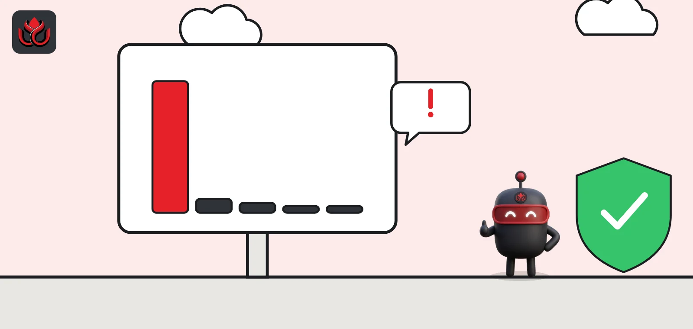
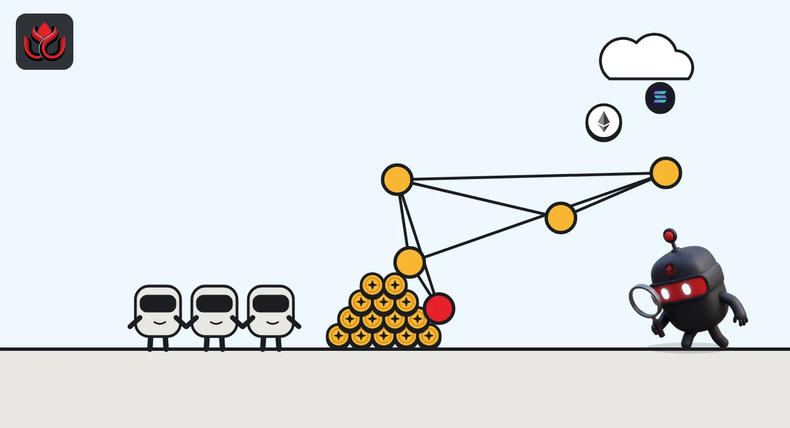
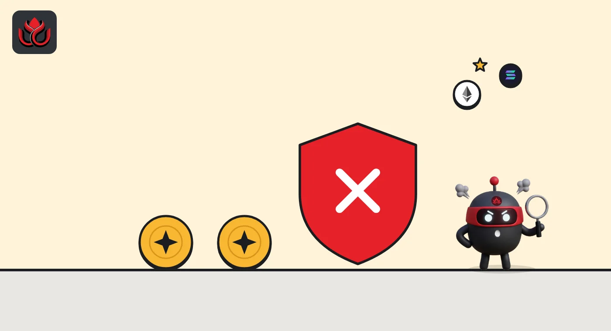

A 100/100 token with bundlers among its top holders: how to read DeepSea's risk flags
DeepSea checks every tracked token for holder concentration, thin liquidity, team selling and bundled supply. After October's run of drains and fake apps, here is what those signals mean, with real examples, and why one score is never the whole story.

Key points
- DeepSea scores tokens out of 100 on six checks; on November 2, its lowest score among 831 tracked tokens was Zama (ZAMA) at 33, mainly because the top 10 wallets hold 94.5% of supply.
- Super Inu (SI) on Solana scored 100 and was marked "Looks healthy," yet many of its largest holders carry DeepSea's "Bundler" tag.
- None of the 831 tokens was on DeepSea's scam list. A low score is a warning sign, not a verdict.
 What DeepSea's data shows
What DeepSea's data shows
Every token page on DeepSea carries a "Health" box with six checks: the share of supply held by the top 10 wallets, liquidity, liquidity as a share of market value, money leaving the developer wallet over seven days, tokens sent to exchanges over seven days, and whether the token is on DeepSea's scam list. Each check gets a check mark or a warning, and the result is a score out of 100.
Across the 831 tokens on DeepSea's token map on November 2, one scored 33, 15 scored 50, 165 scored 67, 480 scored 83 and 170 scored 100. None was on the scam list.
DeepSea's Scam alerts page lists the bigger October incidents separately. They include an $86.96 million drain of Ledger hardware wallets bought through a Southeast Asian reseller (flagged 24 days ago) and what it describes as a fake FomoPeek app on the App Store used to steal from iPhone users.
Data: DeepSea (desea.io), checked November 1, 2026, 11:40 p.m. ET.
The short version
On November 2, DeepSea gave Super Inu (SI), a Solana token, a perfect health score of 100 and the label "Looks healthy," even though many of its largest holders carry DeepSea's "Bundler" tag. Its lowest score among 831 tracked tokens, 33, went to Zama (ZAMA), where the top 10 wallets hold 94.5% of supply.
Both cases show the same thing: a token score is a starting point. Here is how to read the signals behind it.
Signal one: who holds the supply
Holder concentration asks a simple question: if a few wallets own most of a token, what happens when they sell? Zama (ZAMA) had the lowest DeepSea score on November 2. Its top 10 wallets hold 94.5% of supply, liquidity was $263,400 against a $176.7 million market value (0.1%), and $16.79 million of ZAMA was sent to exchanges in seven days. DeepSea also shows whales net sellers of $3.34 million.
Context matters. ZAMA's largest visible holders on DeepSea include wallets labeled Binance, OKX and Bybit. Exchange wallets hold coins for many customers, so a high top-10 figure can partly reflect custody, not a few insiders. CoinGecko lists ZAMA at $0.0700 with a $178.8 million market value and $14.2 million of daily trading, 34.9% below its all-time high. A low DeepSea score here means "look closer," not "avoid."

Signal two: bundled supply and snipers
A bundler is a wallet that buys in the same transaction bundle as the token launch, often one of many wallets funded together. A sniper buys in the first blocks after launch. Both can mean a small group quietly controls more supply than the holder list suggests, because it is split across many addresses.
Super Inu (SI) shows why this matters. It passes every check: the top 10 wallets hold only 12.1%, liquidity is $416,000 and nothing went to exchanges in seven days. Yet on its holder list, wallet after wallet carries the "Bundler" tag, mixed in with whales. Spread across many addresses, bundled supply can pass a top-10 test.
DeepSea also lists Super Inu as "not tracked yet" for smart money flows, so there is no buying or selling signal to cross-check. Do not confuse it with a different Solana token, Super Intelligence, which also uses the ticker SI.
Concrete (CT) on BNB Chain shows the opposite mix. DeepSea scores it 50 and labels it "High risk," with the top 10 wallets holding 81.5%, liquidity at 1.8% of market value and $1,980 leaving the developer wallet in seven days. Several of its largest holders are also tagged "Bundler." At the same time, DeepSea shows smart money net buyers of $1.09 million over seven days. DeepSea does not list CT as a scam.
How the 831 tokens scored
How DeepSea's health scores were spread across its 831 tracked tokens on November 2.
DeepSea health scores, 831 tracked tokens
number of tokens
Source: DeepSea token health checks, desea.io, checked November 1, 2026, 11:20 p.m. ET

Signal three: lookalike tokens and flagged wallets
Some risks never show up in a token score. On DeepSea's page for a large Arbitrum wallet, labeled Hold6e36, the trade history is full of tokens with names such as "ÚSDС" and "Ú5DC": lookalikes of USDC built from accented and foreign letters. Fake tokens like these are sent to big wallets in the hope that someone copies the wrong address or trusts the name.
DeepSea also runs a KOL risk watch on its KOLs and Sharks page, listing six influencer wallets found in its risk database. It adds a caveat worth repeating: a flag "shows a link to risky funds, not proof of wrongdoing."
The database itself keeps growing. DeepSea's weekly report put it at 26,368 addresses in the week to October 18, up 520 in a week.
How to use the checks
Read the six checks together, not the score alone. High concentration plus thin liquidity plus tokens flowing to exchanges is a stronger warning than any one of them.
Open the holder list and look at the labels: exchanges, bundlers, snipers, fresh wallets and the developer wallet each tell a different story. Then check the token on CoinGecko or CoinMarketCap for supply and trading data, and on the project's own site for vesting and unlock schedules.
LC Insight analysis
This section is our reading of the facts above, not a statement of fact.
- Super Inu is the most useful lesson here. A clean score can hide bundled supply, so the holder labels matter more than the number at the top.
- ZAMA shows the reverse problem. Exchange custody wallets inflate concentration figures, so a low score on a large, exchange-listed token deserves a closer look before any conclusion.
- October's biggest losses came from drained wallets and a fake app, not from token contracts. Token risk checks help, but wallet hygiene still matters more for most users.
What's next
- Whether DeepSea separates exchange wallets from the top-10 holder check
- Bundler-heavy tokens that start sending supply to exchanges
- New entries on DeepSea's Hacks list
- Growth of DeepSea's risk address database in its next weekly report
Disclaimer. This article is based on public information and the sources listed below as of the update time shown. It is for information only and is not investment, legal or tax advice. Figures may change as companies and authorities publish new data.